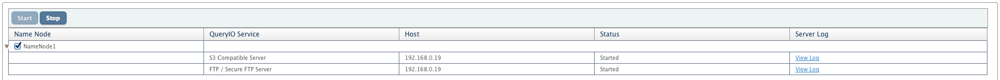

This chapter explains various services that are integrated with QueryIO
Following services are integrated with QueryIO.
To view the service details, goto Admin > QueryIO Services. All services related to each NameNode are displayed in groups.
All services are installed along with NameNode and started automatically.
Following details about services are displayed:
This identifies FTP server which works on top of HDFS. It allows you to connect to HDFS using any FTP client. It also allows to use secure connection over SSL.
To connect to HDFS through FTP client, use following details:
QueryIO provides service to access HDFS through S3 compatible REST API. Click on service name to view details about service.
To access HDFS using S3 Compatible server, see the Developer documentation
QueryIO provides service to start or stop services on a particular NameNode.
Select the NameNode and click on "Start" or "Stop" to perform respective operation.